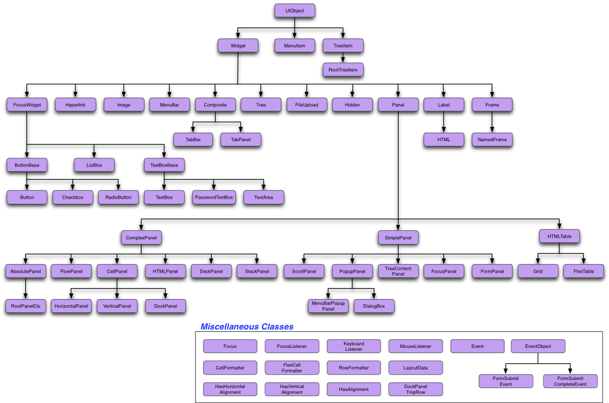

The ui module defines the classes shown in the diagram, below. All user-interface widgets that will place something on-screen are derived from UIObject. Anything which takes keyboard as well as mouse input is derived from FocusWidget; except for Tree, TabPanel, TabBar and MenuBar, all classes that can contain other widgets are derived from Panel.
Classes derived from SimplePanel can have one widget added to them. Typically they take the widget as the argument to their constructor, or you use setWidget(). Classes derived from ComplexPanel can have zero or more widgets: they all have add() functions which take no other arguments, except for AbsolutePanel which takes two optional x,y coordinates and DockPanel which takes a zone argument (North, South etc.)
HTMLPanel and its derivative classes, Grid and FlexTable are slightly different, again, in that their add() functions all take row,column arguments. They also provide Row and Column formatting, so that, in the case of FlexTable, you can indicate that a cell should span additional rows and/or columns.
